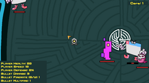

Project Type
Card game simulator
Project Entry
A blackjack simulator framed with a playful premise and a lighter tone than the rest of the project set.

Bubble Casino works better as a devlog entry because the value is partly in the tone and framing, not only in the rules of blackjack. This format gives room to describe what the project is aiming for.
The core interaction is familiar, so iteration mostly lives in presentation, pacing, feedback, and how the premise supports the humor.
Because the underlying card rules are straightforward, the challenge is making the project feel authored rather than generic. That usually comes down to UI clarity, animation timing, and writing.
A stronger devlog pass later could document specific decisions around feedback loops, table presentation, and why the theme supports the mechanic.
